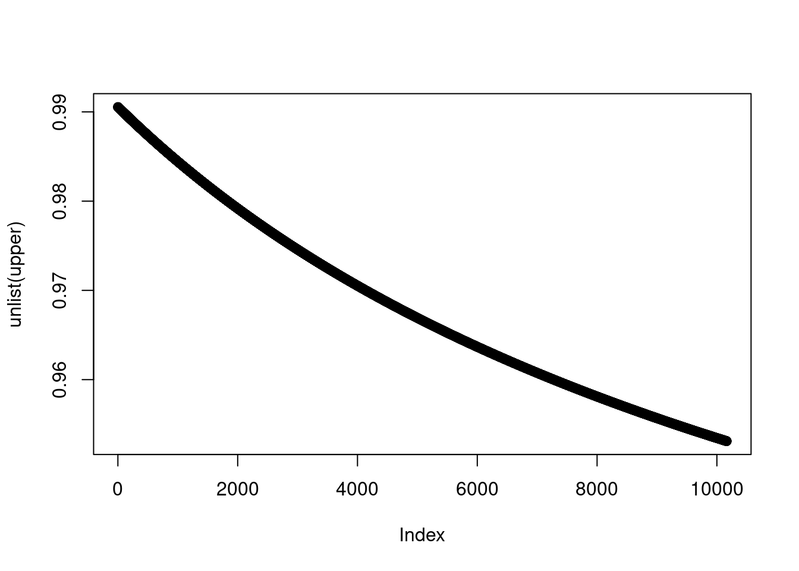

Chapter 10 simulation
The HR of HCC did not attenuated by after control liver cirrhosis in current multivariable Cox-Proportional hazard model. That result suggest the effect of aspirin use for HCC prevention are independent to status of liver cirrhosis or not. However, the stratification analysis show different pattern according to HCC status. The HR for HCC by using aspirant in liver cirrhosis patient is 0.81 with statistical significance, but that in without liver cirrhosis patient are not. The HR and 95%CI for HCC in without liver cirrhosis patient is 0.88 and 0.74-1.04. That might be the relative small number of aspirin usage in current study. 9837 of 161673 (00.00%) are used aspirin in current study, while 00.00% in western country (ref:nhanes.. havard boston Nursing study). Hence, we simulate the data as increased number of aspirin user with fixing the ratio of prevalence of HCC and HR of each group.
asp = c('non', 'asp')
hcc = c(2068, 168)
nhcc= c(118317, 8251)
test = data.frame(asp, hcc, nhcc)
library(tidyverse)## ── Attaching packages ─────────────────────────────────────── tidyverse 1.3.1 ──## ✓ ggplot2 3.3.5 ✓ purrr 0.3.4
## ✓ tibble 3.1.6 ✓ dplyr 1.0.7
## ✓ tidyr 1.2.0 ✓ stringr 1.4.0
## ✓ readr 2.1.1 ✓ forcats 0.5.1## ── Conflicts ────────────────────────────────────────── tidyverse_conflicts() ──
## x dplyr::filter() masks stats::filter()
## x dplyr::lag() masks stats::lag()test %>%
mutate(inc = hcc/nhcc) %>%
mutate(hr = inc /0.02036117 ) ## asp hcc nhcc inc hr
## 1 non 2068 118317 0.01747847 0.8584216
## 2 asp 168 8251 0.02036117 0.9999999ci95 = function(x1, n1, x2, n2){
ll = log((x1/n1)/(x2/n2)) - 1.96*sqrt(((n1 - x1)/x1)/n1 + ((n2-x2)/x2)/n2)
ul = log((x1/n1)/(x2/n2)) + 1.96*sqrt(((n1 - x1)/x1)/n1 + ((n2-x2)/x2)/n2)
ci = list(exp(ll), exp(ul))
}
i = 1
gg = ci95(2068*i, 118317*i, 168*i, 8251*i)
gg2 = lapply(c(60:70)/100,
function(i){
ci95(2068*i, 118317*i, 168*i, 8251*i)
})
gg2## [[1]]
## [[1]][[1]]
## [1] 0.7021556
##
## [[1]][[2]]
## [1] 1.049465
##
##
## [[2]]
## [[2]][[1]]
## [1] 0.7033178
##
## [[2]][[2]]
## [1] 1.047731
##
##
## [[3]]
## [[3]][[1]]
## [1] 0.7044537
##
## [[3]][[2]]
## [1] 1.046042
##
##
## [[4]]
## [[4]][[1]]
## [1] 0.7055641
##
## [[4]][[2]]
## [1] 1.044395
##
##
## [[5]]
## [[5]][[1]]
## [1] 0.7066501
##
## [[5]][[2]]
## [1] 1.04279
##
##
## [[6]]
## [[6]][[1]]
## [1] 0.7077126
##
## [[6]][[2]]
## [1] 1.041225
##
##
## [[7]]
## [[7]][[1]]
## [1] 0.7087524
##
## [[7]][[2]]
## [1] 1.039697
##
##
## [[8]]
## [[8]][[1]]
## [1] 0.7097703
##
## [[8]][[2]]
## [1] 1.038206
##
##
## [[9]]
## [[9]][[1]]
## [1] 0.7107671
##
## [[9]][[2]]
## [1] 1.03675
##
##
## [[10]]
## [[10]][[1]]
## [1] 0.7117434
##
## [[10]][[2]]
## [1] 1.035328
##
##
## [[11]]
## [[11]][[1]]
## [1] 0.7127001
##
## [[11]][[2]]
## [1] 1.033938sim = function(non, asp){
ci95(non*0.01747847 , non, asp*0.02036117, asp)
}
upper=lapply(9837:20000, function(x)list(sim(126568, x))[[1]][[2]])
plot(unlist(upper))
upper %>% unlist() %>% tibble() %>%
setNames('upper') %>%
mutate(ranks = row_number()) %>%
filter(upper <=1)## # A tibble: 10,164 × 2
## upper ranks
## <dbl> <int>
## 1 0.991 1
## 2 0.991 2
## 3 0.991 3
## 4 0.991 4
## 5 0.991 5
## 6 0.991 6
## 7 0.991 7
## 8 0.991 8
## 9 0.990 9
## 10 0.990 10
## # … with 10,154 more rows